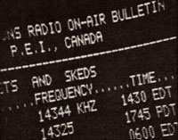

New Directions Radio
Technology of the third wave and the NDR on-air bulletin.
By the Mother Earth News editors
November/December 1981
Copthorne Macdonald is the inventor of slow-scan television . . . a method of amateur radio transmission that allows ham operators to both hear and see each other during shortwave broadcasts.
Electronic information technologies-including video, computer, radio, and data transmission systems-are beginning to have more and more impact on each of our lives. And, although such innovations can provide the means for improved human communication, the powerful tools aren't always benign. When they are used to obscure reality and control people, for example, these technologies can become very dangerous.
Alvin Toffler-in his perceptive book The Third Wave-characterizes our present-day industrial society as a dying "second wave" of civilization ... and claims that the current is being overtaken rapidly by a third (postindustrial) wave. Although he feels that the process is irreversible, Toffler warns that "agents" of the second wave are still using the whole array of information technologies to try to retard the inevitable decay of their "reign".
Of course, we aren't helpless in the face of such attacks. We can, in fact, counter them by using advanced information technologies to our advantage ... to help strengthen the growth of the peopleoriented third wave. Toffler envisions a decentralized world in which carefully selected technologies serve human purposes. Helping to bring that scenario into being is what the NOR network is ail about.
And we've already made some small but significant moves forward! Ham networks are alive and well all over the world, while computer bulletin boards and free access data bases are springing up in many places. None of these activities could be called a revolutionary "final answer", but each one does serve to carry our consciousness ahead a bit, and may even suggest what the next step might be. The formation of the third wave is an evolutionary, incremental process .. . so each attempt to apply information technologies to that purpose has definite value.
As I've mentioned here before, some exciting developments in the third-wave movement are likely to stem from linking microcomputer technologies and ham radio. In the next few installments of this column, I plan to report on some of those advances ... beginning with NDR's new "electronic publication".
THE NDR ON-AIR BULLETIN
Once a month, I sit down at the keyboard of my personal computer and type a few hundred words into the machine's memory banks. This cluster of information (which includes the current list of NOR nets and skeds, news of ham activities, material from letters sent by readers of this column, and general news items of interest to NOR members) is stored temporarily in semiconductor chips, ready for instant distribution anywhere in the world.
Would-be readers of the bulletin can then choose one of three ways to gain access to it. Perhaps the easiest method is to tune in during one of the periodic bulletin transmissions. To do so, you'll need-in addition to your ham band receiver-a modem (either a Bell 103 type or a 170-Hz shift RTTY type) and a 110- or 300-baud ASCII terminal. Currently, our schedule includes three transmissions on Tuesday and one on Saturday. On Tuesdays you can join us, at 5:15 p.m. EST, on 21098 kHz . . . or immediately after W1AW's 9:00 p.m. EST RTTY and ASCII broadcast on 7095 kHz . . . or at 10:00 p.m. EST on 14098 kHz. The Saturday bulletin is aired at 11:00 a.m. EST on 14098 kHz. During each transmission, the bulletin is sent twice, first at the 300-baud rate and then at 110 baud (however, only 110 baud is used on 7095 kHz). At the end of each transmission, our "readers" are invited to add their own comments or news items.
You can also access the NDR bulletin by telephone . . . using a 300-baud ASCII terminal and a 103-type, originate mode, full-duplex modem. All you have to do is dial 902/894-5236 direct, anytime after 11 p.m. EST. Once the phone starts ringing, send a Touch-Tone "1" for ten seconds ... or use your modem's 1.1 kHz "originate mode" transmit tone. The phone should then automatically return a 2.1 kHz "answer" tone. Connect your modem Immediately after that, type in a carriage return, the word LIST, and another carriage return. The transmission-at 300 baud-will then begin and continue for two minutes or so. (NDR bulletins vary in length, but I always place the Information that I think will be of the most general interest-such as the network schedule-near the beginning of the transmission . . . and, of course, you can hang up at any time during the call.)
Finally, the bulletins are available by mail. They're not sent out separately, but are included in the New Directions Round-table Newsletter that's produced by our friend Art Mourad (WB2POB). (You can sign up for Art's mailing list by following the directions printed at the end of this column.) Producing and distributing a publication by electronic means can have a num. ber of advantages over the conventional methods of doing so. For one thing, the production costs are obviously lower. The "publisher" spends nothing for paste-up, typesetting, platemaking, press run, paper, or ink. Distribution by radio is free, too, aside from the individual cost of equipment to receive the monthly messages. Of course, picking up on a bulletin by long-distance telephone is expensive .. but at 300 words per minute, a call doesn't have to be very long (and if it's placed during low-rate hours, It will be less expensive yet).
Electronic publication makes good ecological sense, too. It requires less material and, generally, less energy than does the production and transportation of paper copies. Electronically transmitted Information can also be more timely than the printed word, since It's capable of being distributed immediately after It's written. An on-air bulletin may be amended or updated at any time, too, and the process is open to readers' Input. Our NDR electronic bulletin, then, is not the ussual "finished" product, but rather a continually changing one ... making it truly a phenomenon of the evolutionary third wave!
Peace,
Cop Macdonald (VE1 BFL)
P.O. Box 2941
Charlottetown
Prince Edward Island
Canada C1A 8C5
New Directions Radio is an international network of radio amateurs concerned with those ways of using ham radio (and related modes of communicating) that promote our own growth as individuals, and that we perceive as helping to create a more aware, more caring, and more responsible human society. We encourage all who share these interests to work with us. A current schedule of on. the-air activities is included in each Issue of the bi-monthly New Directions Round. table Newsletter, published by Art Mourad (WB2POB) as a service to the rest of us. To subscribe, send 25 cents for each issue desired to Art Mourad, Dept. TMEN, P.O. Box 787, Bergenfield, New Jersey 07621.
Toffler's The Third Wave is available at libraries or-in the $3.95 Bantam paper back edition-from most bookstores,
 |
 |
|